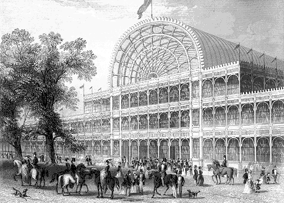

Before the Industrial Revolution, the word design barely existed in the sense we use it now. Objects were made by people who knew what they were making and how to make it. A chair came out of a joiner’s shop; a teapot came out of a potter’s workshop; a book came out of a printer’s press. The person who shaped the object and the person who made it were often the same person, or at least worked within arm’s reach of each other. Style came from tradition, materials came from nearby, and quality came from the hand and eye of the maker.
Then, over the span of roughly a century, this world dissolved. Steam engines appeared in mills. Coal-fired furnaces spread across the English Midlands. Looms moved from cottages into factories. Labor was divided, specialized, and subordinated to the rhythm of machines. Goods that had once taken weeks to make by hand could be produced in hours, in quantities no workshop could match, at prices no artisan could compete with. By the middle of the nineteenth century, the question of who decides what things look like had been forcibly separated from the question of who makes them. The person who drew the shape and the person who cast it, stamped it, wove it, or printed it no longer worked in the same room — or even the same country.
This separation is where modern design begins. Not as a celebration, but as a problem. By the 1830s, critics across Europe were complaining that machine-made goods were ugly: crudely imitative, overwrought, badly proportioned, and dishonest about their materials. A teapot shaped like a cottage. A gas lamp disguised as a Corinthian column. A cast-iron table pretending to be bamboo. Everything was decorated and nothing was resolved. Observers called it the crisis of taste, and it is the problem that the discipline of design was invented to solve.
The story of the Industrial Revolution in design history is, therefore, not simply a story of machines. It is the story of how a new kind of professional — the designer — came into existence as a response to industrial production. It is the story of how governments, schools, museums, and critics organized themselves around the question of visual quality in mass-produced goods. And it is the story of the first design reform movement: a loose network of thinkers, teachers, manufacturers, and critics who argued, sometimes shrilly, that industrial civilization needed a better visual culture and that this culture would not appear by accident.
Everything that comes after in this course — Arts and Crafts, Art Nouveau, the Bauhaus, modernism, even the contemporary arguments about AI and design — is in some way an answer to questions that were first posed between roughly 1760 and 1880.
The Industrial Revolution was not a single event but a sustained transformation that began in Britain around 1760 and unfolded over the next 120 years. Its defining features are easy to list but were hard to live through: the mechanization of production, the concentration of workers in factories, the substitution of mineral energy (coal, and later oil and gas) for muscle and water power, the rise of cities around industrial employment, and the emergence of a global system of raw materials, manufactured goods, and capital.
Britain led the way for reasons historians still debate: accessible coal and iron, a functioning patent system, a stable currency, an empire that supplied raw cotton and absorbed finished goods, and a class of entrepreneurial manufacturers willing to take risks. By 1800, Britain was producing more than half the world’s cotton textiles and pig iron. By 1851, when the Great Exhibition opened in London, the country held the largest industrial economy on earth and used that fact as a justification for its empire.
For design, the key technological developments were these: the steam engine, perfected by James Watt in the 1760s and 1770s, which freed factories from rivers and allowed production to scale; the spinning jenny (James Hargreaves, 1764) and the water frame (Richard Arkwright, 1769), which mechanized cotton spinning; the power loom (Edmund Cartwright, 1785), which mechanized weaving; the coke-smelting of iron, which made cast and wrought iron cheap enough for structural use; and, after about 1830, the railway, which collapsed distances between factory, port, and consumer. Each of these inventions did not simply produce more stuff. They changed what stuff could look like.
By the 1830s, a chorus of British critics — including architects, writers, and a few worried manufacturers — began publishing alarmed assessments of the quality of industrial goods. Their complaints were remarkably consistent. Machine-produced objects, they argued, were:
This was the “crisis of taste.” It is important to understand that the crisis was not really about taste in the casual sense of individual preference. It was about the failure of an entire industrial system to produce visual culture worth looking at. Behind the complaint was a deeper fear: that industrial civilization might be materially powerful and culturally impoverished, and that the two might be connected.
The first serious intellectual attack on industrial design came from an unexpected direction: a Catholic convert and Gothic Revivalist named A.W.N. Pugin (1812–1852). In his pamphlet Contrasts (1836) and his more systematic The True Principles of Pointed or Christian Architecture (1841), Pugin argued that the visual degradation of his century was not an accident of bad taste but a moral failure. Gothic architecture, he claimed, had been honest: its pointed arches revealed their structural function, its ornament grew out of its construction, its makers had been faithful craftsmen working within a shared Christian culture. Modern industrial production, by contrast, was a lie: Classical ornament applied to steam-powered factories, cast iron pretending to be stone, workers alienated from their labor and from each other.
Pugin’s two central design principles would echo through the next century of reform. First, all ornament should enrich construction rather than conceal it. Second, every feature of a building or object should have a purpose. These sound obvious now. They were radical then. They also contained the seeds of modernism’s later rejection of ornament altogether — though Pugin himself was passionately devoted to ornament, provided it was structurally honest and historically rooted.
Pugin’s most famous collaboration was with the architect Charles Barry on the new Houses of Parliament (1840–1870), built after the old palace burned in 1834. Barry designed the plan; Pugin designed virtually every interior detail — furniture, wallpaper, tile, stained glass, ironwork — in a scholarly Gothic idiom intended to restore visual integrity to a corrupted age. He died at forty, exhausted and in the middle of a breakdown, having almost single-handedly launched the idea that design carries moral weight.
If any single event defines the Industrial Revolution in design history, it is the Great Exhibition of the Works of Industry of All Nations, held in London from May to October 1851. The exhibition was the first true world’s fair: over 14,000 exhibitors from Britain, its empire, and dozens of foreign countries displayed more than 100,000 objects under a single enormous roof in Hyde Park. Six million people came through the doors — the equivalent of roughly a third of the British population.

The exhibition was conceived by Prince Albert, the German-born husband of Queen Victoria, and organized chiefly by a civil servant named Henry Cole (1808–1882), whose role we will return to. Its official purpose was to celebrate industry and peaceful exchange among nations. Its unofficial purpose, inscribed in every speech and pamphlet, was to demonstrate Britain’s leadership in manufacturing to the rest of the world.
The building that housed the exhibition was as important as anything inside it. Designed in a matter of weeks by Joseph Paxton (1803–1865), a gardener who had built greenhouses for the Duke of Devonshire, the structure was a vast modular shed of cast iron and plate glass, prefabricated off-site and assembled in less than nine months. It was 563 metres long, covered 7.7 hectares, and enclosed three full-grown elm trees. The journalist Douglas Jerrold nicknamed it the Crystal Palace, and the name stuck. After the exhibition, it was dismantled and re-erected, in expanded form, at Sydenham in South London, where it stood until it burned down in 1936.
The Crystal Palace was not merely a building. It was an argument. It said: industrial materials and industrial methods, when used honestly and imaginatively, can produce architecture that is light, rational, modern, and beautiful. Nothing like it had ever been built. For many later critics — including members of the Bauhaus — the Crystal Palace was the unintended masterpiece of the nineteenth century, the one building that took industrial production seriously on its own terms.
The contents of the exhibition were another matter. Visitors found endless halls of machinery alongside endless halls of domestic goods: furniture, silverware, textiles, ceramics, jewelry, lamps, clocks, carpets. A great deal of it was the overwrought, historically confused, materially dishonest output that the reformers had been warning about. A carved oak bookcase in the French court bristled with figures from three different centuries. A stove took the form of a medieval knight. A hunting knife had a handle in the shape of a stag’s head cast in silver. Critics came, looked, and sharpened their pens.
If Pugin was the prophet of design reform, Henry Cole was its bureaucrat — and in the end bureaucrats are what movements need. Cole was a polymath: a civil servant who had reformed the Public Record Office, a campaigner for the Penny Post, a publisher, and a tireless organizer. In the 1840s, under the pen name Felix Summerly, he ran Summerly’s Art-Manufactures, a project that commissioned artists to design everyday objects (teapots, paperweights, children’s books) in hopes of demonstrating that manufactured goods could be both commercially viable and visually literate.
From this experiment Cole drew several conclusions that would shape British design policy for the rest of the century. He believed that good design was a national economic interest, not just an aesthetic preference. He believed that designers needed formal training — art training grounded in the study of ornament, historic styles, and the properties of materials. He believed that the public needed to be educated too, through museums and exhibitions. And he believed that government should help organize all of this.
After the Great Exhibition — which made him famous and which also turned a large profit — Cole used the surplus funds to establish a cluster of institutions in South Kensington, London: the Museum of Manufactures (1852, soon renamed the South Kensington Museum, and finally the Victoria and Albert Museum in 1899); the Government School of Design, which absorbed and expanded earlier design schools founded in 1837; and later the buildings that became the Royal College of Art, Imperial College, and the Royal Albert Hall. Cole’s South Kensington complex was the first serious institutional infrastructure for design education and public design literacy in the modern world.
The V&A, in particular, was a new kind of museum. Where existing museums collected fine art or natural history, the South Kensington Museum deliberately collected applied art: furniture, ceramics, textiles, metalwork, and even the less-than-admirable products of the Great Exhibition, preserved as warnings. Students at the school across the street could walk through the galleries and study what good and bad design looked like in person. The model was copied across Europe and the United States; nearly every major decorative arts museum of the later nineteenth century owes something to Cole’s example.
While Cole built institutions, John Ruskin (1819–1900) built an argument. Ruskin was the towering art critic of Victorian Britain — a writer of enormous influence and enormous contradictions, whose books on architecture, painting, and political economy shaped a generation. Two of his works matter most for design history: The Seven Lamps of Architecture (1849) and the second volume of The Stones of Venice (1853), which includes a chapter called “The Nature of Gothic.”
Ruskin’s central claim was that the quality of a society’s design is inseparable from the condition of its workers. Gothic architecture, he argued, was beautiful not because medieval craftsmen had better tools but because they had been allowed to think. A Gothic carver could make decisions, improvise, correct his errors, and invest himself in his work. The result was buildings full of variety, humanity, and imperfection — qualities Ruskin believed were essential to any living art. Industrial production, by contrast, reduced workers to the status of machines. It demanded perfect, repetitive execution of someone else’s design, and it punished the smallest deviation. The result was objects that looked mechanically flawless and spiritually dead.
“It is verily this degradation of the operative into a machine, which, more than any other evil of the times, is leading the mass of the nations everywhere into vain, incoherent, destructive struggling for a freedom of which they cannot explain the nature to themselves.” — John Ruskin, The Stones of Venice, vol. II (1853)
Ruskin’s argument had enormous consequences. It turned the question of design into a question of labor, of morality, and ultimately of politics. It gave William Morris, reading it as a student at Oxford in the 1850s, the framework for a life’s work. It gave later reformers — in Britain, in the United States, and in Japan — a vocabulary for criticizing mass production without sounding merely nostalgic. And it introduced a tension into modern design thought that has never fully resolved: is the problem of industrial design really a visual problem, or is it a problem about the people who make things?
While Pugin argued from religion and Ruskin argued from social ethics, a third reformer approached the crisis of taste through systematic study. Owen Jones (1809–1874) was a Welsh-born architect, designer, and colorist who had travelled extensively in Spain and studied the ornament of the Alhambra, publishing the first chromolithographed architectural book of its kind in 1842–1845. He was responsible for the interior decoration of the Crystal Palace in 1851, and he served as one of Cole’s key collaborators at the School of Design.
In 1856 Jones published The Grammar of Ornament, one of the most influential design books of the nineteenth century. The book laid out a comparative survey of decorative traditions from around the world: Egyptian, Assyrian, Greek, Byzantine, Arabian, Turkish, Moorish, Persian, Indian, Hindu, Chinese, Celtic, Medieval, Renaissance, Italian, Elizabethan, and (finally) “Leaves and Flowers from Nature.” Each chapter was accompanied by brilliantly coloured lithographed plates — a technical feat in itself — and by a short introduction articulating the principles underlying that tradition’s ornament.
At the opening of the book, Jones set out thirty-seven propositions on ornament and color that functioned as a design manifesto. Among them: that the decorative arts arise from architecture and should follow it; that all ornament should be based upon a geometrical construction; that true beauty results from a repose derived from the fulfilment of every rational requirement; and, most famously, that “construction should be decorated, decoration should never be purposely constructed.”
The importance of Jones’s book is hard to overstate. It argued, through sheer accumulation of evidence, that ornament was not a matter of fashion or accumulation but of principle. It gave Victorian designers a visual library that was global rather than parochial, and it encouraged them to understand other cultures’ design systems on their own terms rather than as mere raw material for eclectic borrowing. It also planted the idea, later central to modernism, that design could be analyzed scientifically — that visual laws existed and could be taught.
The dominant stylistic mode of the nineteenth century was historical revival. Designers borrowed freely from the past, sometimes sincerely and scholarly (as in Pugin’s Gothic) and sometimes promiscuously (as in the stew of styles on display at the Great Exhibition). Greek, Roman, Egyptian, Byzantine, Romanesque, Gothic, Renaissance, Baroque, and Rococo all had their nineteenth-century revivals, often running simultaneously. A wealthy Victorian dining room might contain a Gothic fireplace, Renaissance panelling, Classical silver, and Chinese wallpaper — a level of stylistic layering that earlier centuries would have found bewildering.
Revival was not inherently bad. Pugin’s Gothic was serious scholarship in the service of a consistent moral program. But much industrial revivalism was thin and opportunistic: a veneer of borrowed styles applied to whatever object needed decorating, with no underlying principle beyond the desire to look expensive. It is this shallow eclecticism, more than revivalism itself, that the reformers attacked.
The Industrial Revolution made ornament cheap. Techniques like electrotyping, stamping, mechanized carving, and transfer printing allowed manufacturers to apply elaborate decoration to goods at almost no marginal cost. A plaster ceiling rose that would once have taken a modeller a day could now be pressed out by the dozen. A printed cotton could carry a floral pattern indistinguishable, at a glance, from a hand-painted silk.
The result was an extraordinary proliferation of ornament across every class of object. For the first time in history, working- and middle-class consumers could afford objects that looked like they belonged in an aristocratic drawing room. For many people at the time, this was a source of delight and social mobility, not embarrassment. The reformers’ complaints about “debased taste” must be understood against this background: they were often complaints by one class about the ornamental preferences of another.
Against industrial imitation, the reformers built a new critical vocabulary centred on the idea of honesty. A design was honest when it acknowledged what it was made of and how it was made. Iron should look like iron, not pretend to be stone. A chair should reveal its joinery, not hide it under ornament. A printed pattern should exploit the flatness of the surface, not try to simulate three-dimensional relief. These ideas, essentially formulated by Pugin and reinforced by Jones and Ruskin, became the founding ethics of modern design.
Alongside honesty came a related idea: fitness for purpose. Every part of an object should contribute to its function. Ornament should grow from use, not be applied on top of it. These principles would reach their most extreme form in the modernist slogans of the twentieth century — Sullivan’s “form follows function,” Loos’s “ornament and crime,” the Bauhaus’s insistence that beauty arises from the honest use of materials — but the core vocabulary was invented by the nineteenth-century reformers.
Alongside the overwrought Victorian interior ran a parallel tradition that the reformers mostly admired: the functional architecture and objects produced by engineers working without aesthetic pretension. Railway stations, iron bridges, lighthouses, steamships, mill buildings, botanical glasshouses — these were designed primarily to solve structural and practical problems, and they developed a visual language of exposed structure, rhythmic repetition, and honest use of materials that had nothing to do with Gothic or Classical revival.
The Crystal Palace was the most celebrated example, but there were many others: the Coalbrookdale cast-iron bridge (1779), the Menai Suspension Bridge (1826), Brunel’s Clifton Suspension Bridge (designed 1831, completed 1864) and his steamship Great Eastern (1858), the glass palm houses at Kew Gardens (1848), the train sheds at St Pancras (1868) and Paddington (1854). Critics like Ruskin had complicated feelings about these structures — he detested the aesthetic of naked iron — but many later observers, from Viollet-le-Duc in France to the Bauhaus in Germany, came to see them as the most original design work of the century. They suggested that industrial modernity, if it took itself seriously, could produce a visual language entirely its own.
Wedgwood belongs at the beginning of this story, not the end. A potter from an old Staffordshire family, he transformed English ceramics in the second half of the eighteenth century by combining rigorous material experimentation with modern marketing and a near-obsessive attention to what we would now call brand. He developed new ceramic bodies — cream-coloured earthenware (which he renamed Queen’s Ware after securing the patronage of Queen Charlotte in 1765), black basalt, and, most famously, the pale blue stoneware called jasperware (introduced 1775) whose white classical reliefs became a signature of Neoclassical taste.
Wedgwood’s factory at Etruria (opened 1769) was itself an industrial experiment: specialized workshops, division of labor, steam-powered machinery added later, a company town for workers. He kept detailed records, invented quality-control procedures, and exported across Europe and to America. He also separated the work of designing a vase from the work of making one, employing artists like John Flaxman to supply drawings that his craftsmen would execute. In doing so, he essentially invented the modern role of the industrial designer, decades before anyone had a word for it. For this reason, many design historians date the origins of the discipline to his factory rather than to any later reformer.
Pugin was the child of a French-born architectural draughtsman who taught him Gothic detailing from infancy. By his early twenties he was designing furniture for royal commissions. His conversion to Roman Catholicism in 1835 fused with his architectural obsessions to produce a total program: true Christian architecture was pointed-arch Gothic; all other styles were decadent; industrial society had lost its way and could only be healed by a return to medieval craft, faith, and hierarchy.
His books — Contrasts (1836), The True Principles of Pointed or Christian Architecture (1841), and An Apology for the Revival of Christian Architecture in England (1843) — were short, pugnacious, and illustrated with paired drawings contrasting medieval and modern scenes to the bitter disadvantage of the present. His practical work as architect and decorator was immense: Catholic churches and cathedrals across England and Ireland, tile designs for Minton, wallpaper for Crace, and the famous interiors of the Houses of Parliament. He died at forty, having redefined what it meant for design to carry a moral argument.
Cole was the organizational genius of Victorian design reform. A civil servant with a gift for making institutions exist, he was by turns a reformer of the Public Record Office, a campaigner for the Penny Post (he designed the first commercial Christmas card as a side project in 1843), a publisher of children’s books, a music critic, and the man who, more than anyone, turned the aspirations of the reformers into actual buildings and budgets. He organized the Great Exhibition of 1851 at the request of Prince Albert and then used its profits to build the South Kensington complex of museums and schools.
His 1849 Journal of Design and Manufactures, co-edited with Richard Redgrave, was the first periodical anywhere to take industrial design seriously as a subject of criticism. As head of the Department of Practical Art (1852) and later the Department of Science and Art, he ran British state design education for two decades. The system he built — government-funded design schools, a network of regional museums, a central collection of exemplary and cautionary objects — was studied and copied across Europe. He was knighted in 1875.
Ruskin inherited a fortune, went to Oxford, and spent the rest of his life writing about art, architecture, society, and eventually political economy. Modern Painters (five volumes, 1843–1860) defended J.M.W. Turner; The Seven Lamps of Architecture (1849) and The Stones of Venice (1851–1853) articulated his theory of honest, worker-centred Gothic; Unto This Last (1860) and Fors Clavigera (1871–1884) carried the argument into economics and social reform.
His prose was extravagant, his judgments absolute, and his influence extraordinary. For thirty years he was the most-read critic in the English-speaking world. Gandhi credited Unto This Last with changing his life. Tolstoy read him. William Morris read him. Generations of Arts and Crafts designers took their vocabulary from him almost verbatim. He believed, with increasing conviction, that the cure for industrial design was not better ornament but better social arrangements — a position that put him well to the left of most of his contemporaries and eventually contributed to his mental breakdown in the 1870s and 1880s.
Jones was the cooler head of the reform movement: an architect and decorator fascinated by the systematic study of ornament across cultures. Born in London to a Welsh family, he trained as an architect, travelled to Egypt, Turkey, and Spain in the early 1830s, and spent years documenting the ornament of the Alhambra in Granada. His Plans, Elevations, Sections, and Details of the Alhambra (1842–1845) was the first architectural book in Britain to use colored lithography on a large scale — a landmark in the history of printed illustration.
As superintendent of works for the Great Exhibition, Jones was responsible for the interior paint scheme of the Crystal Palace, choosing a bold combination of red, yellow, and blue based on his theories of primary-color harmony. As a teacher and writer — particularly through The Grammar of Ornament (1856) — he reshaped how a generation of designers thought about pattern, color, and cross-cultural visual language. His work quietly influenced everyone from William Morris to Frank Lloyd Wright.
If Wedgwood invented the role of the industrial designer, Dresser arguably became its first self-conscious practitioner. Trained at the Government School of Design under Owen Jones and Richard Redgrave, Dresser studied botany so intensively that he was nearly hired as an academic botanist before turning to design as a full-time profession. He worked across ceramics, glass, metalwork, furniture, textiles, and wallpaper, and he was one of the first designers to travel to Japan (1876–1877) at the invitation of the Japanese government; his book Japan: Its Architecture, Art, and Art Manufactures (1882) was the first serious Western study of Japanese design.
Dresser’s metalwork for firms like Elkington, Hukin & Heath, and James Dixon & Sons in the 1870s and 1880s is astonishingly modern to contemporary eyes: geometric teapots on tripod legs, minimal cruet sets, sugar bowls reduced almost to abstract solids. He designed for industrial production without apology and without disguise. His work was largely forgotten after his death and rediscovered in the twentieth century, when modernists recognized him as a near-contemporary who had arrived, via reform theory and botanical analysis, at something very close to their own aesthetic half a century earlier.
Paxton was not a designer in the usual sense. He was a gardener who became an engineer because the gardens he worked on demanded it. Starting as an apprentice at the Horticultural Society’s garden at Chiswick, he was hired at twenty-three to run the vast gardens at Chatsworth House, where he spent the next thirty years designing greenhouses, fountains, and rock gardens for the Duke of Devonshire. His Great Conservatory at Chatsworth (1836–1841) was, at the time it opened, the largest glass building in the world.
When the committee planning the Great Exhibition rejected every submitted architectural proposal as too slow, too expensive, or too heavy, Paxton sketched an alternative on a piece of blotting paper during a railway board meeting: a scaled-up version of his Chatsworth greenhouses, prefabricated from standard modules, assembled on site. The committee accepted the design; Paxton and his engineers worked out the details; and the Crystal Palace rose in Hyde Park in less than nine months. It made him famous. He was knighted shortly after the exhibition opened, served in Parliament, and spent his last years designing parks, railways, and country estates. The Crystal Palace itself was his one durable contribution to design history, but it was enough.
No account of the Industrial Revolution is complete without James Watt (1736–1819), the Scottish instrument maker whose improvements to the Newcomen steam engine — patented in 1769 — made steam power economically practical, and his partner Matthew Boulton (1728–1809), the Birmingham manufacturer whose Soho Manufactory (opened 1766) pioneered modern factory production. Boulton’s factory combined metalworking skills across multiple trades, built Watt’s engines under license, and produced silverware, buttons, buckles, and ornamental goods of high quality. Boulton was a friend of Wedgwood’s, a member of the Lunar Society of scientific entrepreneurs, and one of the first manufacturers to understand that well-designed products were a competitive advantage. The Watt–Boulton partnership is the point at which steam power and design self-consciousness first met.
Brunel was the great engineer of the railway age, the designer of the Great Western Railway, the Clifton Suspension Bridge (designed 1831), the tunnels and viaducts that carried the GWR across southern England, and three transformative steamships — the Great Western (1838), the Great Britain (1845), and the Great Eastern (1858). He did not think of himself as a designer in the reformers’ sense and was not interested in ornament or style. But his structures, shaped by the rigorous logic of load and span and material, produced some of the most powerful visual images of nineteenth-century industrial civilization: the chains of the Clifton bridge crossing the Avon gorge, the double-ended iron hull of the Great Eastern, the dark span of Paddington station. Later critics came to see these works as the hidden alternative tradition of industrial design — a tradition in which engineers, working outside the art schools, solved problems that the reformers had only described.
The geography of the Industrial Revolution was, initially, the geography of Britain. Coal from Newcastle and South Wales powered steam engines. Iron came out of Coalbrookdale in Shropshire, where Abraham Darby III built the first cast-iron bridge in 1779 — still standing today. Cotton mills clustered in Manchester and the surrounding Lancashire towns, drawing workers from the countryside into dense urban neighbourhoods. The Staffordshire Potteries, a cluster of towns in the Midlands, became the centre of industrial ceramics under Wedgwood and his competitors. Birmingham and Sheffield were the workshops of the world for small metalware — buttons, buckles, cutlery, plated silver. London was the financial, governmental, and ceremonial capital, home to the exhibitions, institutions, and markets that translated industrial output into cultural influence.
Already discussed above, but worth recapitulating as a place: for six months in 1851, a modular glass shed in central London held every class of industrial product the world then made and, by holding them all in one room, made the question of design inescapable. It was the first time a reforming public could walk through the output of industrial civilization and form an opinion about it collectively. Nearly every subsequent design reform movement — Arts and Crafts, Jugendstil, the Werkbund, the Bauhaus — descends in some measure from the reaction to what people saw in Hyde Park that summer.
The cluster of institutions Cole built with the Great Exhibition’s surplus profits on a former market-garden site in South Kensington is arguably the most important piece of design infrastructure in the world. The Victoria and Albert Museum, the Royal College of Art, the Natural History Museum, the Science Museum, the Royal Albert Hall, and Imperial College all trace their origins to this period and this place. The principle Cole established — that a nation benefits economically and culturally from public institutions devoted to the study and teaching of design — has been copied in almost every industrial country since.
Paris answered London with its own world’s fair in 1855. The French exhibition was more art-focused than the British one, formalizing the separation of beaux-arts from arts industriels that would characterize French design discourse for the rest of the century. Subsequent Paris expositions — in 1867, 1878, 1889 (the Eiffel Tower), and 1900 (Art Nouveau’s peak) — built on this precedent, turning world’s fairs into the primary venue for national self-representation through design.
Eleven years after the Crystal Palace, London held a second world’s fair, on the future V&A site. The 1862 exhibition is less famous than 1851, but it was important for design history in a different way: it was the first international fair to display large quantities of Japanese decorative art, following the reopening of Japan to Western trade in the 1850s, and the first to feature William Morris, Marshall, Faulkner & Co. — the firm that would become the cornerstone of the Arts and Crafts movement. The exhibition marks the handoff between the first phase of design reform (Pugin, Cole, Jones, Ruskin) and the second phase (Morris, Webb, Mackmurdo, Voysey) that the next module will cover.
By the 1860s and 1870s, industrialization and its associated design problems had spread beyond Britain. Germany, France, Belgium, the northeastern United States, and parts of northern Italy were all industrializing rapidly. Each country responded to the British reform movement in its own way: in Germany through the founding of Kunstgewerbeschulen (schools of applied art) in cities like Munich, Berlin, and Dresden; in France through state support for decorative arts and a proliferation of private manufacturing firms; in the United States through the Philadelphia Centennial Exposition of 1876 and the founding of design-oriented schools and museums on the British model (the Metropolitan Museum of Art, the Museum of Fine Arts Boston, and the Pennsylvania Museum — later the Philadelphia Museum of Art — all date from this period).
The Iron Bridge at Coalbrookdale (1779) — Abraham Darby III, Thomas Pritchard. The first major structure in the world to be built of cast iron. A single arch spanning 30 metres over the River Severn in Shropshire. Still in use as a pedestrian bridge, now a UNESCO World Heritage Site.
The Houses of Parliament (Palace of Westminster) (1840–1870) — Charles Barry (plan), A.W.N. Pugin (interiors). The most ambitious Gothic Revival building of the nineteenth century. Barry set out the overall composition and Classical plan; Pugin designed virtually every interior fitting, ornament, wallpaper, textile, and piece of furniture in an uncompromising Gothic idiom.
The Crystal Palace (1851) — Joseph Paxton. The prefabricated iron-and-glass exhibition hall that housed the Great Exhibition in Hyde Park and was later re-erected at Sydenham. Burned down in 1936. Its modular construction, standard components, and honest use of industrial materials made it a touchstone for every subsequent defender of industrial architecture.
Paddington Station (1854) — Isambard Kingdom Brunel, Matthew Digby Wyatt. The main terminus of the Great Western Railway. Brunel designed the great iron-and-glass train shed; Wyatt supplied ornamental detail that reconciled it with Victorian architectural expectations.
St Pancras Station and Midland Grand Hotel (1868 / 1873) — William Henry Barlow (shed), George Gilbert Scott (hotel). The train shed is the largest single-span enclosed space in the world at its completion; the hotel facade is one of the most exuberant Gothic Revival buildings in London. Together they represent the split personality of Victorian architecture: rational iron behind picturesque brick.
The Palm House at Kew (1848) — Decimus Burton, Richard Turner. A curved glass-and-iron greenhouse at the Royal Botanic Gardens. Pre-dates the Crystal Palace and arguably served as a conceptual ancestor.
Menai Suspension Bridge (1826) — Thomas Telford. The first major modern suspension bridge, connecting the island of Anglesey to the Welsh mainland. 176-metre main span.
The Great Eastern (1858) — Isambard Kingdom Brunel, John Scott Russell. An iron-hulled steamship nearly twice the length of any previous vessel, with a double hull and five funnels. A commercial failure but a design landmark: the first true modern ship in scale and construction.
Wedgwood Jasperware (1775 onward) — Josiah Wedgwood. Pale blue (and later green, lilac, and black) stoneware decorated with white classical relief figures, often modelled by artists like John Flaxman. The combination of Neoclassical aesthetics and industrial production made Jasperware the emblematic Wedgwood product and a fixture of English Neoclassical interiors.
Wedgwood Queen’s Ware (1765 onward) — Josiah Wedgwood. Refined cream-coloured earthenware that replaced pewter and delftware on middle-class tables. Royal patronage turned it into an international standard.
Minton Encaustic Tiles (from 1830s) — Herbert Minton, with designs by A.W.N. Pugin. Industrially-produced decorative floor tiles in medievalizing patterns, used in cathedrals, parish churches, and the Houses of Parliament. Demonstrated that mechanized production could serve Gothic Revival sincerity.
Pressed Glass and Bohemian Overlay Glass (from c. 1820s) — Various manufacturers. Mechanization of glass pressing made ornate cut-glass effects available at popular prices. Critics saw this as the democratization of decorative glass; reformers saw it as imitative cheapening. Both were right.
Roller-printed Cotton (from 1780s) — Various manufacturers. Copperplate and then engraved-roller printing mechanized the decoration of cotton cloth, producing printed textiles so cheap and various that they transformed European and American dress. Pattern design became a distinct industrial specialty.
Pugin’s Wallpapers and Textiles for Crace (1840s) — A.W.N. Pugin. Gothic-patterned wallpapers, damasks, and velvets manufactured by John Gregory Crace & Son under Pugin’s supervision. The first systematic attempt to produce industrially-manufactured decorative interiors on strict stylistic principles.
The Grammar of Ornament (1856) — Owen Jones. A folio volume of a hundred chromolithographed plates surveying the ornament of twenty cultures, with a prefatory manifesto of thirty-seven design propositions. The most important design book of the nineteenth century and a landmark in color printing.
Watt’s Rotative Steam Engine (1781 onward) — James Watt and Matthew Boulton. The engine that made steam power practical for factory use. Its elegant mechanism — cylinder, beam, flywheel — was aesthetically striking in its own right and became the defining industrial image of the age.
Boulton’s Sheffield Plate and Silverware (from 1760s) — Matthew Boulton. High-quality metalware produced in Birmingham using rolling, stamping, and early Sheffield plate (silver-coated copper). Demonstrated that industrial production could serve luxury markets.
Christopher Dresser’s Silver and Electroplate (1870s–1880s) — Dresser for Hukin & Heath, Elkington, James Dixon & Sons. Geometric teapots, cruet sets, and toast racks whose pared-down aesthetic anticipates twentieth-century modernism by half a century. Produced for industrial manufacture and openly designed as such.
Contrasts (A.W.N. Pugin, 1836) and The True Principles of Pointed or Christian Architecture (1841). The founding texts of the moral critique of industrial design.
The Seven Lamps of Architecture (John Ruskin, 1849) and The Stones of Venice, vol. II, “The Nature of Gothic” (1853). Ruskin’s case that design quality and the dignity of labor are inseparable.
The Journal of Design and Manufactures (Henry Cole and Richard Redgrave, 1849–1852). The first magazine anywhere to treat industrial design as a subject of serious criticism.
The Grammar of Ornament (Owen Jones, 1856). A systematic, comparative, principled approach to decorative design that outlived every other Victorian theory of ornament.
By the 1870s, the first wave of British design reform had accomplished much of what it set out to do. Design schools existed. Museums of applied art existed. Periodicals, books, and principles for discussing industrial design existed. A vocabulary of honesty, fitness, and historical seriousness had entered the professional conversation. A visible tradition of engineering architecture — the railway sheds, bridges, and glasshouses — had shown what industrial modernity could look like when it stopped pretending to be something else.
And yet most of the reformers regarded their project as unfinished. Machine production was still, in their view, turning out more bad goods than good. The schools were uneven. The V&A was full of objects that reformers had intended as warnings but that visitors admired unironically. Above all, the fundamental tension that Ruskin had diagnosed — between mass production and human work — remained unresolved and, if anything, was getting worse as factories grew larger and more impersonal.
Out of this dissatisfaction, in the 1860s and especially the 1870s and 1880s, a second generation of reformers emerged, taking Ruskin’s arguments further than he had taken them himself. They proposed to address the crisis of industrial design not by reforming mass production but by partly withdrawing from it: by re-establishing workshops where designers and makers worked together, by reviving craft traditions, by insisting that simple, well-made objects were the beginning of a better society. This is the Arts and Crafts movement, and it is the subject of the next module. Its central figure, William Morris, grew up on Ruskin’s books and began his working life in the decade of the Great Exhibition. He represents, in many ways, the child of everything described here.
At the same time, engineering architecture kept developing its own unacknowledged modernism. The iron-and-glass vocabulary of the Crystal Palace reappeared in the Galerie des Machines at the Paris Exposition of 1889, in the Eiffel Tower in the same year, and in the Chicago skyscrapers of Sullivan and Burnham in the 1880s and 1890s. By the early twentieth century, a new generation of architects and designers — Peter Behrens, Walter Gropius, Le Corbusier — would look back on the nineteenth century and argue that the real modern style had been sitting in plain sight all along, in the stations and bridges and factories that the art schools had ignored.
Before the Industrial Revolution, the person who shaped an object was usually the person who made it. Afterwards, design became a specialized activity done by a specialized person, distinct from the craftsman, the manufacturer, the engineer, and the artist. That specialization is the foundation of everything we now call professional design — graphic, industrial, interior, interaction, service, experience. Wedgwood, Cole, Dresser, and the Government Schools of Design all contributed to inventing this role, and it is their most consequential legacy.
The cluster of institutions Cole assembled in the 1850s — design schools, public museums of applied art, trade periodicals, and international expositions — became the template for design education and design culture everywhere. The Bauhaus, a century later, is unthinkable without this ecosystem. So is every contemporary design school, professional body, and decorative arts museum.
The idea that design can be honest, truthful, appropriate, faithful to its materials, and ethically responsible was invented, or at least codified, by Pugin, Ruskin, and Jones. These adjectives may now sound faintly ridiculous, but they have shaped every design argument since. Modernist functionalism (“form follows function”), mid-century honesty (“truth to materials”), late-twentieth-century sustainability (“cradle-to-cradle”), and early-twenty-first-century ethics in technology (“design for dignity”) are all descendants of the same vocabulary.
Ruskin’s most uncomfortable contribution is also his most durable: the claim that the quality of a society’s design cannot be separated from the condition of the people who make it. Modernism tended to set this question aside in favor of formal and functional problems. Arts and Crafts, back-to-the-land movements, contemporary fair-trade and ethical-sourcing campaigns, and current debates about AI-generated design and content moderation labor have all inherited the question in one form or another. Every time a designer or a consumer wonders whether a beautifully produced object has been made under conditions worth approving of, they are in a conversation that Ruskin started.
Finally, the engineering tradition — Coalbrookdale, Menai, the Crystal Palace, Brunel’s stations and steamships — gave twentieth-century modernism a genealogy it could claim when it wanted to look legitimate. Architects like Walter Gropius and writers like Sigfried Giedion explicitly traced their functionalism to these nineteenth-century iron-and-glass precedents. Even contemporary architectural discourse still invokes the Crystal Palace as a benchmark for what light, prefabricated, honest industrial building can look like.
Pugin argued that design carries moral weight — that objects can be “honest” or “dishonest” in ways that matter ethically. Do you find this idea compelling today? Is a product that misrepresents its materials (plastic made to look like wood, AI-generated images presented as photographs, “handmade” items assembled in factories) doing something morally wrong, or only failing aesthetically?
The “crisis of taste” was, in part, a complaint by one class about the ornamental preferences of another. Newly-industrial consumers loved elaborate machine-produced ornament; reformers thought it was vulgar. How should we think about this conflict? Is there a version of it happening in contemporary design?
Ruskin’s argument was that design quality and the dignity of workers are inseparable. Pick a contemporary product you use every day and try to apply Ruskin’s test. Does knowing how it was made change how you see it? Should it?
The Crystal Palace was designed by a gardener with no formal architectural training, using methods from industrial greenhouses. Why was this work so much more influential for later modernism than the “designed” objects on display inside it? What does this tell us about where new visual languages come from?
Nineteenth-century design reform was heavily institutional: government schools, state-funded museums, civil servants like Henry Cole. Most contemporary design culture is driven by private companies, freelance designers, and online communities. What did the nineteenth-century institutional model do well that we have lost? What is better now?
Owen Jones drew ornament principles from twenty world cultures and published them together in 1856. At the time this was celebrated as broad-minded scholarship. How does The Grammar of Ornament look today, viewed through the lens of colonial extraction and cultural appropriation? Can comparative design study still be done well?